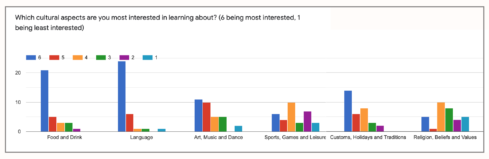
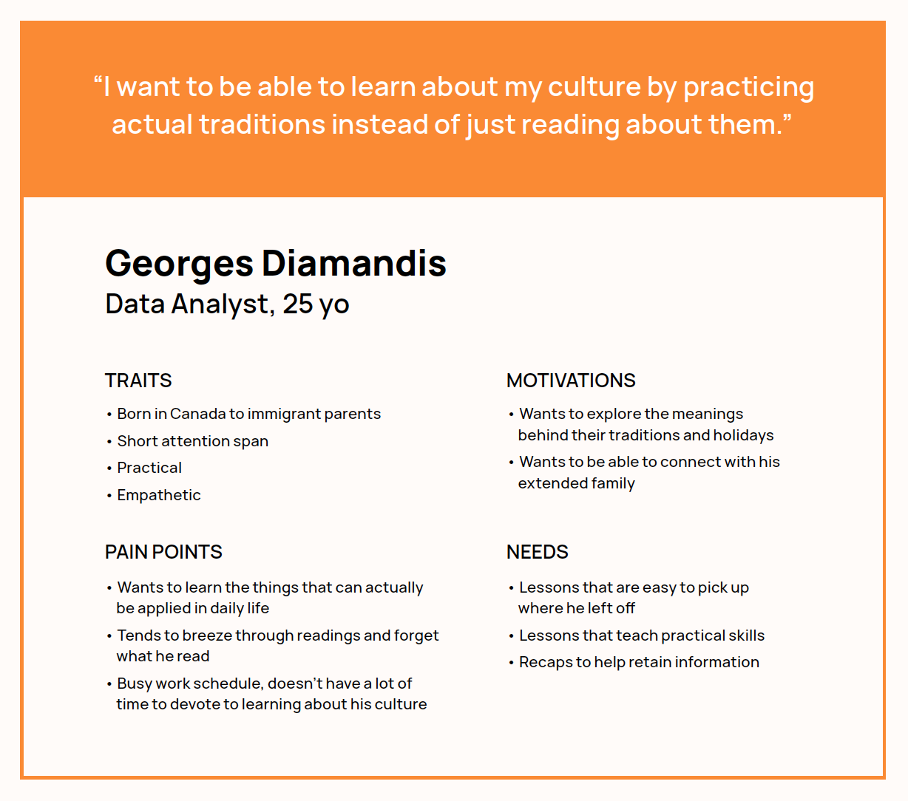
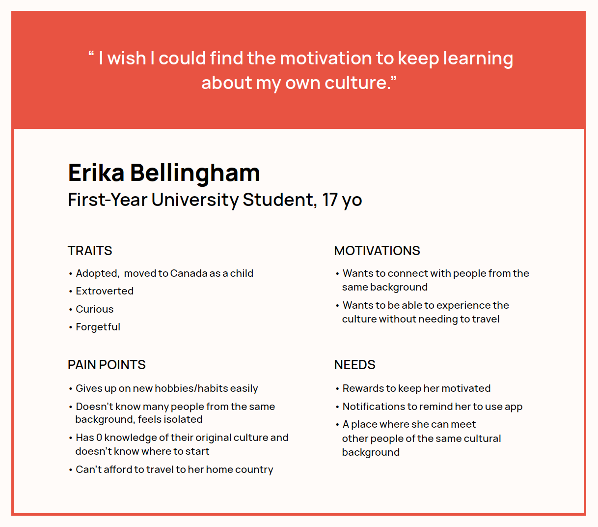
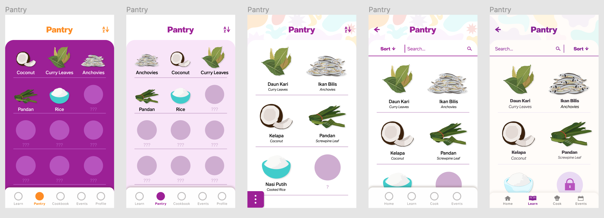
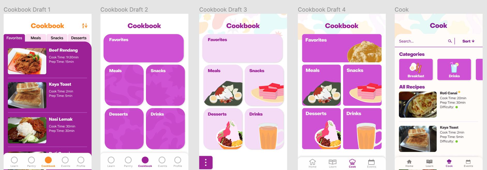
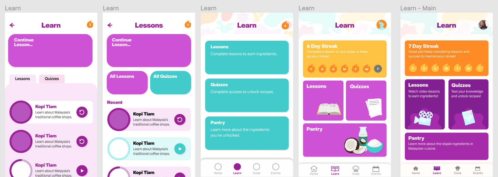
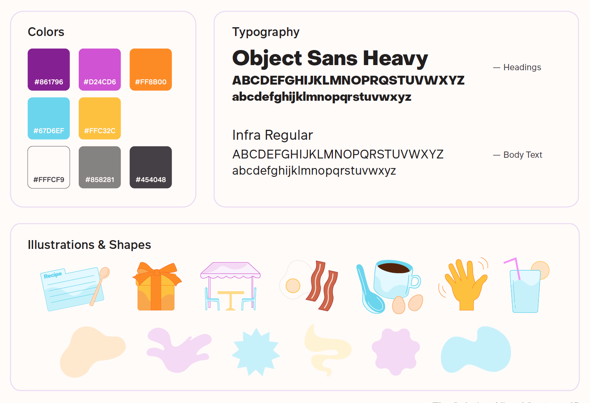

Jul-Sep '20 (12 weeks)
Figma, Adobe Illustrator
Immigrants and their descendants are heavily encouraged to adapt to American/Canadian culture and assimilate and become disconnected from their original cultures as a result. As they approach adulthood, they become more aware of this and they seek to better understand their own cultural identities, but don’t know where or how to learn more about the countries and cultures their families came from.
Globowl is an educational app that uses short video lessons to teach its users about different cultures through the lens of food and cuisine. The videos explain topics such as food-related vocabulary, customs, traditions and holidays, and more. Users are rewarded for completing lessons and quizzes by unlocking recipes they can try out themselves.
Collect Ingredients
Earn ingredient cards by completing video lessons. View ingredients in the Pantry to learn cooking tips and more.

Unlock Recipes
Complete quizzes based on the lessons to test your knowledge and unlock recipes you can try at home!
Keep Track of Your Learning
View your activity streak from the Learn page or review your stats and recently learned vocabulary under your Profile.

Attend Events with Other Users
Meet other users, try new foods and listen to stories. Globowl curates events that feature partner restaurants and organizations that also support
cultural awareness and appreciation. Attending these events can also unlock bonus recipes.
In order to gain a better understanding of the user base, I conducted a survey for university students that asked them about how and where they grew up (North America or elsewhere). Participants were asked about what aspects of their culture they already had knowledge about and which ones they were most interested in as well as what was keeping them from learning more. I found that Food and Language were what participants were most interested in and the main obstacles listed were: a lack of motivation/laziness, coming from mixed backgrounds where only one side was favoured, feeling ashamed/bullied for their culture, and simply not knowing where to go to learn more.
Next, I looked into apps and services already existed in this space and how they tackled the problem: I found that they were very experiential and more story-based. I also did some research on how adults learn best and found that they require lessons that are practical and relevant to their daily lives that they identify more with emotionally driven content, and that they enjoy being able to have some freedom to explore topics on their own.
With the information I gathered from my research and my user survey, I was able to develop two user personas that reflected everything I had learned. My mentor put a strong emphasis on research and making target-centric decisions, so these personas were what I referred to throughout the design and ideation process.
 The sections that went through the most changes were Cook, Learn and Pantry. I had started out using tabs to separate sub-pages, but felt that they were a bit difficult to use for larger fingers. I thought the Lessons and Quizzes sections should be similar but still distinct so users wouldn’t confuse them. I also wanted to reduce the number of interactions it would take to get to view recipes, so the Cook homepage already has recipes ready to browse on top of categories to tap into. For the Pantry, a lot of the changes focused on emphasizing the illustrations of the ingredients and allowing users to better see the details of the illustrations.
  The app uses a mostly warm color palette that reflects a friendly and inviting feel. The shapes used in the backgrounds and illustrations were created to evoke different tastes, sounds and smells one might experience in the kitchen. Key concepts and words are visually highlighted to aid users in retaining what they’ve learned. The illustrations are playful, but still realistic enough to be recognizable.
Throughout this process, I’ve learned how important it is to keep in mind the user personas when designing in order to make
target-centric decisions. The research that I did before my ideation phase was really key to figuring out which features were
most important and how they should be implemented. For example, I made sure to include the option to switch between
lessons from different cultures since a lot of the people in my target audience came from mixed backgrounds.
Something that I‘d like to develop further is the events page: how
RSVPing works, viewing the numbers of attendees at events, as well as how bonus recipes are redeemed after events/how to
verify that someone has attended an event. I would also like to work more on the idea of a journal/photo album where users can
store photos of the recipes they have attempted, and possibly share them and view others’ attempts.
The Figma prototype can be viewed here.
Special thanks to my RGD mentor, Miki Arai, for guiding me through this project!